Code
library(tidyverse)
theme_set(theme_minimal())“The sciences do not try to explain, they hardly even try to interpret, they mainly make models. By a model is meant a mathematical construct which, with the addition of verbal interpretations, describes observed phenomena. The justification of such a mathematical construct is solely and precisely that it is expected to work.”
— von Neumann
In this section, we consider straight line relationships between two variables. We learn how to fit simple regression and robust lines. The later fit to data is not affected by extreme or unusual data points. As a natural outgrowth of this fitting procedure, a method of testing for linearity emerges.
Consider paired data (\(X\), \(Y\)) and suppose that we want to describe the response variable (\(Y\)) in terms of the covariate or explanatory variable (\(X\)) using a straight line. This means that the true assumed relationship is of the form \[y=\alpha +\beta x+\varepsilon\] where \(\alpha\) is the true \(y\)-intercept, \(\beta\) is the true slope and \(\varepsilon\) is the random error term, without which the relationship will become purely deterministic. Note that this model has two parameters \(\alpha\) and \(\beta\) which are unknown population quantities which must be estimated using data. In other words, statistical model must be fitted for confirmatory analysis of data.
In general, a fitted statistical model can be expressed in the following form
\[\text{observation = fit + residual}\]
For fitting straight line models, we have
\[\text{fit} = a + b\text{x}\]
Here \(a\) is the estimate of the \(y\)-intercept \(\alpha\) and \(b\) is the estimated slope of the line \(\beta\). The estimates \(a\) and \(b\) will vary from sample to sample, but the population parameters \(\alpha\) and \(\beta\) are fixed and unknown.
Fitting a line or curve to data is one of the most common techniques used in statistics. It is applicable whenever two or more measures are obtained on each element. In the case of the Mathematics and English scores for example, both measures are of the same kind, but this need not be the case.
Consider the dataset horsehearts and the first 6 rows (cases) are shown below.
library(tidyverse)
theme_set(theme_minimal())download.file(
url = "http://www.massey.ac.nz/~anhsmith/data/horsehearts.RData",
destfile = "horsehearts.RData")
load("horsehearts.RData")head(horsehearts) INNERSYS INNERDIA OUTERSYS OUTERDIA EXTSYS EXTDIA WEIGHT
1 3.8 1.9 2.4 1.5 10.8 10.0 1.432
2 3.0 1.7 2.8 1.7 11.6 12.0 1.226
3 2.9 1.9 2.4 1.7 12.8 12.8 1.460
4 3.6 2.0 2.5 1.7 13.5 13.6 1.354
5 4.3 2.8 2.7 2.0 14.0 14.0 2.211
6 3.6 2.3 2.8 1.7 12.7 13.1 1.212A number of measurements on the left ventricle of a horse’s heart were taken by ultra-sound when each animal was alive and then the weights of the hearts were measured after the animals were killed. Any one of the ultra-sound measurements could be used to predict the weight of the heart, in which case the measurements are of different quantities - one being a length and the other a weight. It is not possible to weigh the heart directly until the animal is dead which is rather a drastic way to collect measurements, so fitting a model relating weight (\(y\)) to an ultra-sound measurement (\(x\)) allows an estimate of the weight (fitted \(y\) or \(\hat{y}\)) to be made while the animal is still alive.
Obviously, we would like the model to fit the data as closely as possible which means that the fit will explain most of the variation in the observations. Therefore the residuals should be free of patterns and represent random variation about the fit. In order to eliminate the patterns in the residuals or to reduce their variation (which increases the influence of the fit) it may be necessary to transform the variables or include other variables in the model. These matters will be considered later on and in the next chapter.
Finally we note that there are at least three reasons for fitting a model:
To describe the relationships between the variables. In experiments in industry, agriculture, psychology etc. we may wish to go one step further to understand the process; here we are moving towards cause and effect but we must tread warily. For example, increasing the police force may seem to increase crime but this may be due to more criminals being caught and the public being encouraged to report other crimes.
The model may be necessary to predict future observations.
The estimates of coefficients, \(a\), \(b\) etc., may have particular meanings and may help to direct future policy or theory.
This section gives some theory/maths behind the simple regression, and there is no need to remember any of the formulae presented.
The term regression is used to describe the tendency for the average value of one variable (called the response or dependent variable) to vary with other variables (called covariates or explanatory or independent or predictor variables or simply regressors). The regression equation is the function that describes this relationship mathematically. A regression model with one explanatory variable is called a simple regression model. A multiple regression model has at least two predictors and this topic is covered in the next chapter.
We can write this regression relationship as \[y=\mu _{y|x} +\varepsilon\] where \(\mu _{y|x}\) is the expected or average value of the response variable \(y\) for a given or fixed \(x\) value and \(e\) represents the random variability of \(y\) about its mean. The notation \(y|x\) stands for \(y\) given \(x\).
If a linear relationship between \(Y\) and \(X\) variables is plausible, then we can express \(\mu _{y|x}\) as a straight line involving \(x\) as \[\mu _{y|x} =\alpha +\beta x\] While few assumptions need to be made in order to fit a regression model, further assumptions are often needed in order to make inference about the goodness of the fitted model. These assumptions are:
that \(Y\) follows a normal distribution about its mean \(\mu _{y|x} =\alpha +\beta x\).
that the variance of \(Y\) (say \(\sigma ^{2}\)) is constant, i.e. unlike the mean it does not change with \(x\).
that the distribution of \(Y\) for a given \(x=x_{1}\) is independent of the distribution of \(Y\) for another given \(x=x_{2}\) (say).
The first two assumptions together with that of linearity can be combined using the notation \(Y\sim N\left(\alpha +\beta x,\, \, \sigma ^{2} \right)\). This set of assumptions made for performing statistical tests on the fitted regression model is illustrated in Figure 1.

The least squares method is used to obtain estimates of the regression coefficients (that is, of the intercept and the slope), as any straight line fit is an equation of the form \(a\) + bx, and hence the coefficients \(a\) and \(b\) are statistics (quantities calculated from the sample) which are used as point estimates of the unknown model parameters \(\alpha\) and \(\beta\).
The least square estimates of the slope estimate \(b\) is given by the formula \[b =\frac{\sum \left(x-\bar{x}\right)\left(y-\bar{y}\right) }{\sum \left(x-\bar{x}\right)^{2}} =\frac{S_{xy} }{S_{xx} } ,\] and hence the y-intercept estimate is \(a=\bar{y}-b\bar{x}.\)
An approach to answer the question of the goodness of fit of the model is to check whether the coefficient of \(x\), that is \(b\), is significantly different from zero. In other words, does \(X\) (extdia) explain a significant amount of the variation in \(Y\) (weight)? A \(t\)-test is used for answering this question.
The true standard deviation of the errors (i.e., \(\sigma _{\varepsilon }\) of the model \(y=\mu _{y|x} +\varepsilon\)) is estimated using the residuals of the fitted simple model. This estimate is given by the formula \[s_{e} =\sqrt{\frac{\sum \left(y-\hat{y}\right)^2 }{n-2} }.\]
The the estimated standard error of \(b\) is given by the formula \[s_{b} =\frac{s_{e} }{\sqrt{S_{xx} } }.\]
The estimated standard error of \(a\) is given by \[s_{a} =\sqrt{s_{e}^{2} \left(\frac{1}{n} +\frac{\bar{x}^{2} }{S_{xx} } \right)}.\]
Note that the 95% confidence intervals for the true \(\beta\) and \(\alpha\) are found using the \(t\)-distribution for the \(df\) associated with the residual standard error namely \((n-2)\). For example, the 95% CI of the slope \(\beta\) is given by \(b\pm t_{n-2} s_{b}\).
The least squares regression line can be used to estimate the mean response \(\mu _{y|x_{0} }\) and predict the actual response \(Y_{0}\) for a given value \(x_{0}\) of the covariate \(X\). In each case the quantity is found by substituting the value \(x_0\) into the regression equation, yielding a fitted value \(\hat{\mu }_{y|x_{0} } =a+bx_{0}\). If assumptions such as \(Y\) is normally distributed with standard deviation \(\sigma\), then this prediction has a normal distribution with mean
\[\mu _{y|x_{0} } =\alpha +\beta x_{0}\] and standard deviation
\[\sigma \sqrt{\frac{1}{n} +\frac{\left(x_{0} -\bar{x}\right)^{2} }{S_{xx} } }.\] The standard deviation formula suggests that the predictions become more variable when \(x_{0}\) is further away from the mean \(\bar{x}\).
The confidence interval for the mean response at \(x_{0}\) is given by
\[\left(a+bx_{0} \right)\pm t_{n-2} \times s_{e} \sqrt{\frac{1}{n} +\frac{\left(x_{0} -\bar{x}\right)^{2} }{S_{xx} } }\] If our aim is to predict the response itself (instead of predicting the mean response at \(x_{0}\)), then the errors will be further more. In other words we obtain the Prediction Interval (PI) for an individual value of \(Y\) (not as the mean) as
\[\left(a+bx_{0} \right)\pm t_{n-2} \times s_{e} \sqrt{1+\frac{1}{n} +\frac{\left(x_{0} -\bar{x}\right)^{2} }{S_{xx} } }.\]
If \(n\) is not small and \(x_0\) is near the centre of the distribution of \(X\), then the prediction standard error can be approximated by \(\sigma\) which is itself estimated by \(s_{e}\), the residual standard error. This means that an approximate 95% interval for the prediction is given by \(\left(a+bx_{0} \right)\pm 2s_{e}\).
We consider the data set horsehearts and discuss simple regression analysis.
It is fairly easy to display fitted simple regression line on a scatter plot; see Figure 2 and the R codes shown below:
ggplot(horsehearts) +
aes(x=EXTDIA, y=WEIGHT) +
geom_point() +
geom_smooth(method = lm, se = FALSE)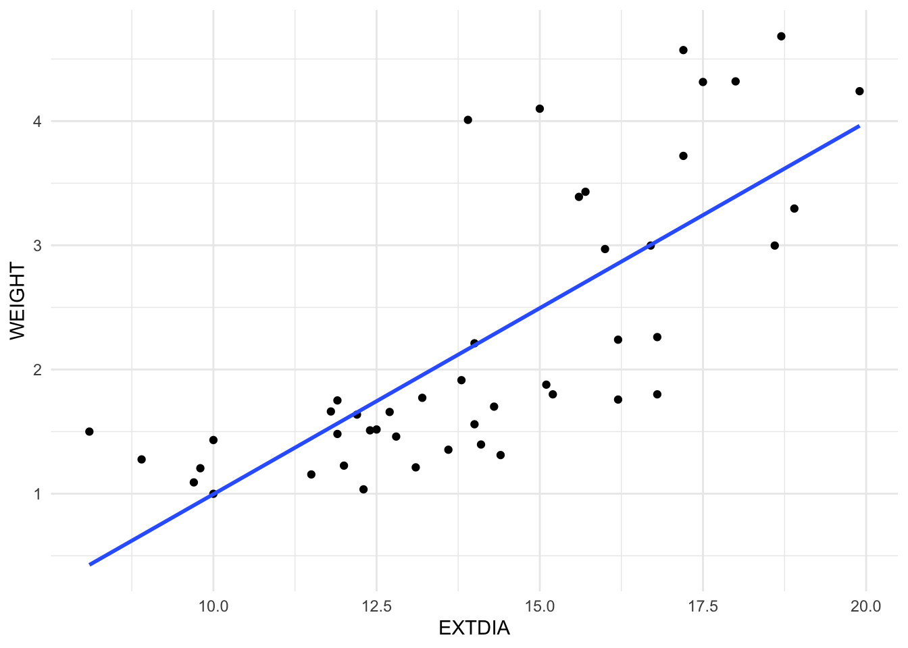
The geoms geom_smooth() or stat_smooth() add the fitted regression line to the plot. For the simple regression of WEIGHT (weights of horses’ hearts) on EXTDIA (diastole exterior width), the fitted simple regression model is \(\hat{y}=a+bx\) For horses heart data, the coefficient estimates are obtained as \(a\) = -2.0003 and \(b\) = 0.2996. That is, the fitted model is given by \(fitted~~weight = -2.0003 + 0.2996\times extdia\) or after rounding
\[fitted~~weight = -2 +0.3\times extdia\]
For a given extdia \(\left(x\right)\) value, the expected weight is given by the fitted simple regression equation. For example, the exterior width (during diastole phase) for the \(39^{th}\) horse is 15.0mm and fitted weight is therefore
\[fitted~~weight =\hat{y}_{39} = -2 + 0.3 \times 15 = 2.5\]
The observed weight of its heart \(\left(y_{39} \right)\) is 4.1kg. For this horse, we obtain the residual as
\[e_{39}= \left(y_{39}-\hat{y}_{39} \right) = 4.1- 2.5 = 1.6.\]
\(t\)-test for Model Parameters
It is desirable to use the R package broom to get parts of the regression outputs. The function tidy() extracts the model and the significance testing results; see Table 1.
library(broom)
library(kableExtra)
simplereg <- lm(WEIGHT~EXTDIA, data=horsehearts)
tidy(simplereg)| term | estimate | std.error | statistic | p.value |
|---|---|---|---|---|
| (Intercept) | -2.00034 | 0.55881 | -3.57965 | 0.00085 |
| EXTDIA | 0.29963 | 0.03877 | 7.72793 | 0.00000 |
For the horses hearts data, under the null hypothesis that the true (or population) slope \(b\) equals zero (i.e., \(H_{0}:\beta =0\)), the test statistic becomes \[t=\frac{b}{s_{b} } =\frac{0.29963}{0.03877} = 7.728.\]
The \(t\)-statistic is clearly large enough to be considered significant for \((n-2)\) \(df\) and the \(p\)-value is close to zero. Thus, we would reject the null hypothesis \(H_{0} :\beta =0\). In other words, the slope coefficient is significantly different from zero and hence the predictor variable extdia explains a significant amount of variation in the response variable weight.
We can also carry out a similar \(t\)-test for the \(y\)-intercept \(\alpha\) based on the \(t\)-statistic \[t = \frac {a}{s_a}= \frac{-2.00034}{0.55881}=-3.58.\] but the main interest is in the slope parameter \(\beta\). See Table 1.
Many of the model summary measures can be obtained for assessing the quality of the fitted model using the glance() function from the broom package (Table 2).
simplereg |>
glance() |>
select(r.squared, sigma, statistic, p.value, AIC, BIC)| r.squared | 0.58 |
| sigma | 0.74 |
| statistic | 59.72 |
| p.value | 0.00 |
| AIC | 106.83 |
| BIC | 112.32 |
How to interpret entries appearing in the R output Table 2 is explained below. Note that the \(R^{2}\) statistic and the residual standard error are two common summary measures for the fitted model. The other measures such as the AIC and BIC shown in in Table 2 are useful for comparison of models, and selecting a best model, which will be discussed later on.
Residual standard error
The size of the residual standard error \(s_{e}\), which is called sigma in Table 2, is important for many reasons. In general, we prefer to have \(s_{e}\) no more than 5% of \(\bar{y}\) or small compared the range of \(y\) data. For the model fitted to horses hearts , the residual standard error is labelled as sigma in Table 2. This value of is rather large (compared to the range of \(y\) data), and hence the fitted model may not be good for prediction purposes.
The size of \(s_{e}\) also controls the size of the standard error of the slope estimate \(b\) (and hence its confidence interval).
R-squared \(\left(R^{2} \right)\) statistic:
The R-Squared statistic, the proportion of the variation explained by the fitted model, is 0.58. This means that 58 percent of the total variation of the weights is explained by the exterior widths (diastole) using the fitted straight line model namely
\[\text {fitted weight = -2 +0.3}\times \text {extdia}\]
The \(R^{2}\) value is also known as the coefficient of (multiple) determination. Notice that when there is only one explanatory variable \(X\), then the \(R^{2}\) is equal to the square of the \((X,Y)\) correlation coefficient, i.e. \(R^{2} =\left(r_{x,y} \right)^{2}\).
We usually require that \(R^{2}\) be at least 0.5 so that at least half of the variation is explained by the fit. For the Horse data the model \(R^{2}\) is not much better than this. However the scatterplot revealed that there may be two different groups of observations in the data and/or the curvature in the data may indicate that a transformation would be advisable so this low \(R^{2}\) is not really surprising.
Remember that there is a difference between a meaningful model and a statistically significant model. An \(R^{2}\) of 0.5 or more indicates a meaningful model whereas the \(t\)-test for slope indicates a statistically significant model. A statistically significant model may not always be a meaningful model - in this case the significance is high but the \(R^{2}\) of 57.6% is barely adequate.
ANOVA and \(F\)-test
Table 2 gives the F-statistic (labelled as just statistic) and the P-value for this F-statistic. The concept behind this statistic is explained below:
The variation in a data set can be measured as the sum of the squared deviation from its central value. This Sum of Squares is abbreviated as SS or SumSq in software regression outputs. For a regression model, we have
I : total SumSq = variation in the observed values about the mean = \(\sum \left(y-\bar{y}\right)^{2}\).
II : regression SumSq = Variation in the fitted values about the mean = \(\sum \left(\hat{y}-\bar{y}\right)^{2}\) (Note that fit is denoted by \(\hat{y}\)).
III : error or residual SumSq = Variation in the residuals \(=\sum \left(y-\hat{y}\right)^{2} =\sum e^{2}\).
These sums of squares due to regression, error and total etc are usually displayed in the form of a table known as the analysis of variance table, which is usually shortened to ANOVA or anova. A typical ANOVA table for a simple regression model will appear as in Figure 3. Depending on the package used, the ANOVA table may differ slightly in style.
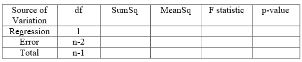
R does not print the last row while displaying the F-statistic and ANOVA table. The following codes can be used to obtain the ANOVA output for the regression model (Table 3).
simplereg |> anova()
# or
simplereg |> anova() |> tidy()| term | df | sumsq | meansq | statistic | p.value |
|---|---|---|---|---|---|
| EXTDIA | 1 | 32.731 | 32.731 | 59.721 | 0 |
| Residuals | 44 | 24.115 | 0.548 | NA | NA |
Each sum of squares (source of variation) has associated with it a degrees of freedom \(df\)). For one explanatory variable, the regression \(df\) = 1. The total \(df\) is always one less than the sample size, that is \(n-1.\) In other words, residual \(df\) = \(n-2\). From the sums of squares, the variance estimates are calculated as SumSq/df which are called Mean Squares (MeanSq).
For the horses’ heart data, we have Regression SumSq = 32.731, Error SumSq= 24.115 and Total SumSq = 56.845. We also have regression \(df\) = 1, total \(df\) = \(n-1 = 45\) and by subtraction residual \(df= 45-1= 44\). Dividing the SumSq by the associated \(df\), we compute
Note that the Total Mean Sq is nothing but the variance of \(y\), which is usually not displayed in the ANOVA table.
It is possible to formalise the goodness of fit of the model by carrying out an \(F\)-test. The \(F\) statistic is formed by the ratio of two estimates of variances, the regression Mean Sq or variance and the error Mean Sq or variance. The distribution of the \(F\) statistic is governed by the numerator \(df\) and the denominator \(df\). For the horses’ heart data, we obtain
\[F = \frac{{\text {regression MeanSq} }}{{\text {residual MeanSq}}} = \frac{32.731}{0.548} = 59.721 \]
with 1 \(df\) for the numerator and 44 \(df\) for the denominator.
The null hypothesis is that the model does not fit the data well. That is, the model explains too little of the variation in the \(y\) values to be significant. This hypothesis is generally rejected whenever the \(p\)-value of the \(F\)-test is less than 0.05. In ANOVA table, the \(F\) statistic is displayed along with the \(p\)-value. Here the \(p\)-value is the probability of observing an \(F\) statistic larger than the computed value. For horses’ heart data, the computed \(F\) statistic is 59.721. \(F\) statistic is always positive (being the ratio of mean squares) and hence the alternative hypothesis must be one-sided. That is, the \(p\)-value is given by \(\Pr \left(F_{1,44} >59.721\right)\) which is very close to zero. This means that the null hypothesis is firmly rejected and we conclude that the regression model using the explanatory variable extdia explains a significantly large proportion of the variation of the response variable weight.
Note that the \(R^{2}\) can also be calculated from the ANOVA table
\[R^{2} =\frac{{\text {regression SumSq}}}{{\text {total SumSq}}} = \frac{32.731}{56.845} = 0.5758\] or alternatively
\[R^{2} = 1-\frac{{\text {residual SumSq}}}{{\text {total SumSq}}} = 1 -- \frac{24.115}{56.845} = 0.5758.\] The degrees of freedom for residual SumSq and total SumSq are not identical; while they are very close this is not always the case (e.g. in multiple regression which we will meet in the next chapter). Hence we can adjust for this to obtain the adjusted R-Squared (\(R_{adj}^{2}\)):
\[ \begin{aligned} R_{adj}^{2} &= 1-\frac{\left(\frac{{\text {residual SumSq}}}{{\text {residual df}}} \right)}{\left(\frac{{\text {totalSumSq}}}{{\text {total df}}} \right)\, } \\ &= 1-\frac{24.115/44}{56.845/45} \\ &=0.5661. \end{aligned} \]
For the simple regression, the \(F\)-test is equivalent to the previous \(t\)-test (and produces exactly the same \(p\)-value). In fact when there is only one explanatory variable the two test statistics are related by the equation \(F\) = \(t^2\). A further relationship between the two is that the residual standard error is the square root of the residual mean square.
The summary() function in base R gives rather a bulky output for the fitted regression model particularly when the number of predictors is large.
simplereg <- lm(WEIGHT~EXTDIA, data=horsehearts)
summary(simplereg)The R package lessR will get you even a bigger output of model quality and summary measures. We wont be covering all of them but only the essential ones obtained by the broom package function glance(). Try-
library(lessR)
lessR 4.2.9 feedback: gerbing@pdx.edu
--------------------------------------------------------------
> d <- Read("") Read text, Excel, SPSS, SAS, or R data file
d is default data frame, data= in analysis routines optional
Learn about reading, writing, and manipulating data, graphics,
testing means and proportions, regression, factor analysis,
customization, and descriptive statistics from pivot tables
Enter: browseVignettes("lessR")
View changes in this and recent versions of lessR
Enter: news(package="lessR")
Interactive data analysis
Enter: interact()
Attaching package: 'lessR'The following objects are masked from 'package:dplyr':
recode, renamereg(WEIGHT~EXTDIA, data=horsehearts)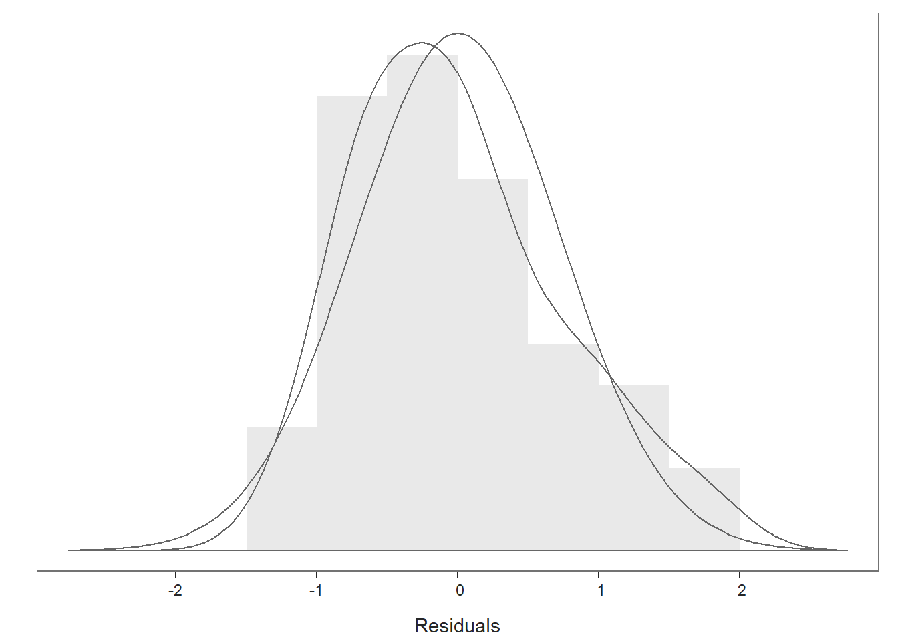
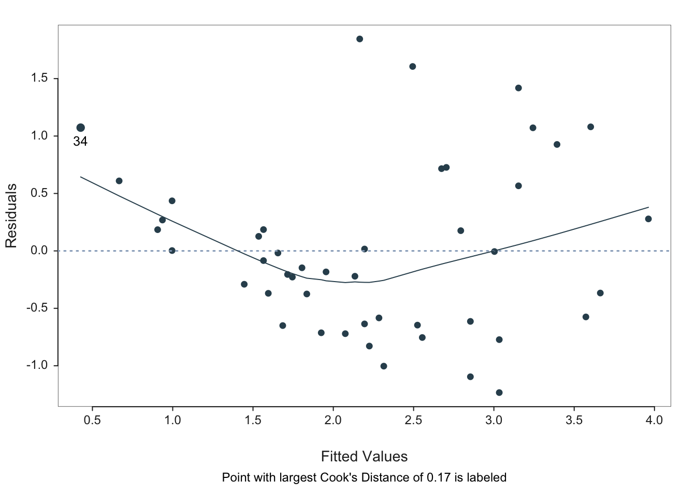
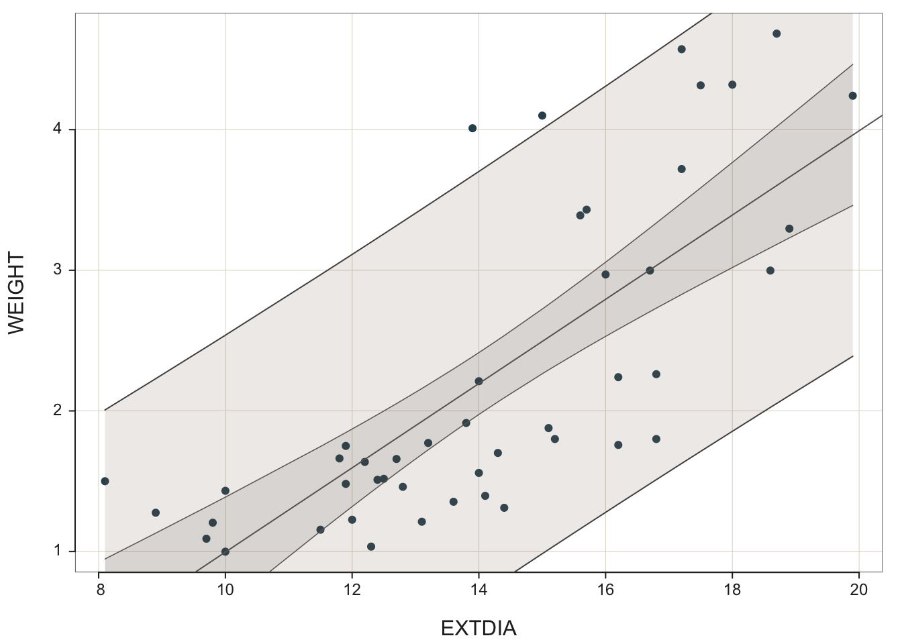
Recall that the fitted value for the weight of a heart with an extdia value of 15.0mm was 2.5kg. This value can be interpreted as the predicted weight of a horse heart with extdia = 15mm, or as the estimated of all horse hearts with extdia = 15mm. The 95% confidence limits for the mean response for the mean weight of horses hearts with extdia = 15mm is given by \(\left(2.26kg,2.72kg\right)\). However the weight of any individual heart with extdia = 15mm could (with the same confidence) be as low as 0.98kg or as high as 4.00kg (the prediction interval being (0.98kg, 4.00kg). Notice that the approximate PI formula works as well here: \(s\) = 0.7403 and so 2.50 \(\pm\) (2 \(\times\) 0.74) = (1.0kg, 4.0kg). Note that manual computation of the prediction intervals is harder, and we prefer to use R for this.
# confidence interval
predict(simplereg, list(EXTDIA = 15), interval = "confidence") fit lwr upr
1 2.494161 2.264023 2.724299# prediction interval
predict(simplereg, list(EXTDIA = 15), interval = "prediction") fit lwr upr
1 2.494161 0.9845172 4.003805We can also create a dataset with the desired intervals using the augment() function from the broom package.
horseCI <- augment(simplereg, interval = "confidence")
horsePI <- augment(simplereg, interval = "prediction")Let’s visualise the confidence and prediction bands for the fitted line on a scatter plot using the geom_ribbon() function; see Figure 4.
p1 <- simplereg |>
augment(interval = "confidence") |>
ggplot() +
aes(x = EXTDIA) +
geom_point(aes(y = WEIGHT)) +
geom_ribbon(aes(ymin = .lower, ymax = .upper), alpha = 0.5) +
geom_line(aes(y = .fitted)) +
ggtitle("Confidence interval")
p2 <- simplereg |>
augment(interval = "prediction") |>
ggplot() +
aes(x = EXTDIA) +
geom_point(aes(y = WEIGHT)) +
geom_ribbon(aes(ymin = .lower, ymax = .upper), alpha = 0.5) +
geom_line(aes(y = .fitted)) +
ggtitle("Prediction interval") +
theme_light()
library(patchwork)
p1/p2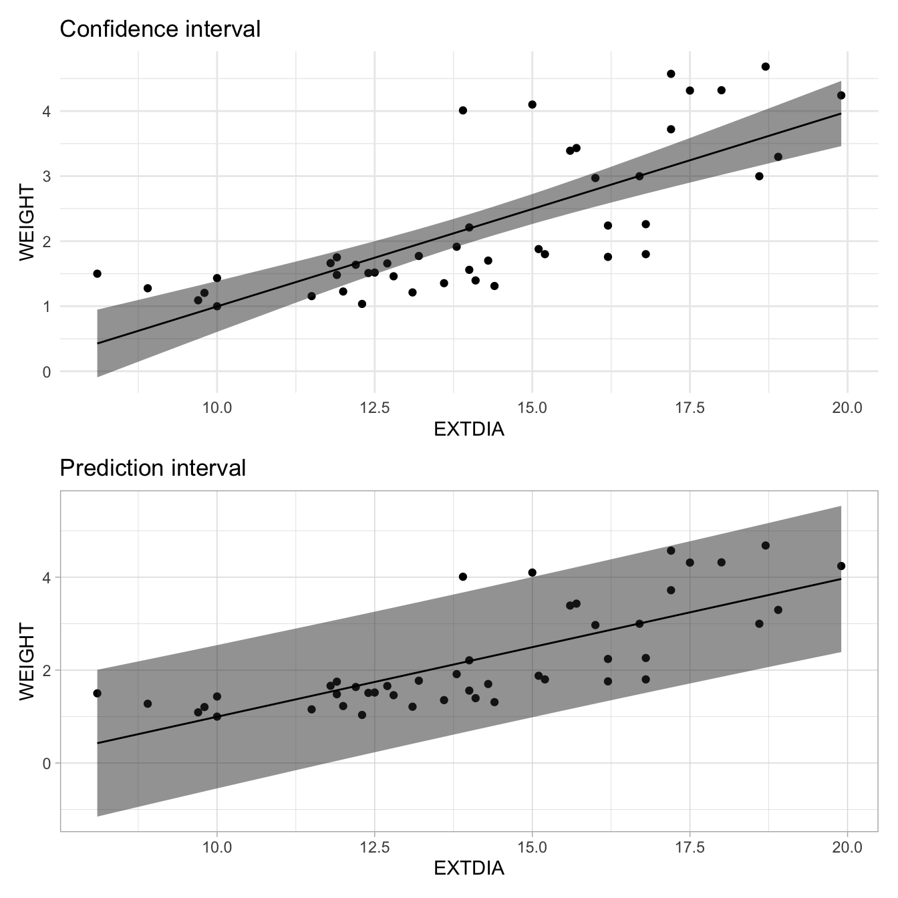
The R package visreg readily shows the confidence bands too. Try-
library(visreg)
visreg(lm(WEIGHT~EXTDIA, data=horsehearts),)A careful examination of the residuals indicates how well a model fits the data and also helps to identify shortcomings and possible ways of improving the model fit. In this section, we review some of the points to notice and use them to improve fitted simple as well as multiple regression models covered in the next Chapter.
library(ggfortify)
ggplot2::autoplot(simplereg, which=1:2)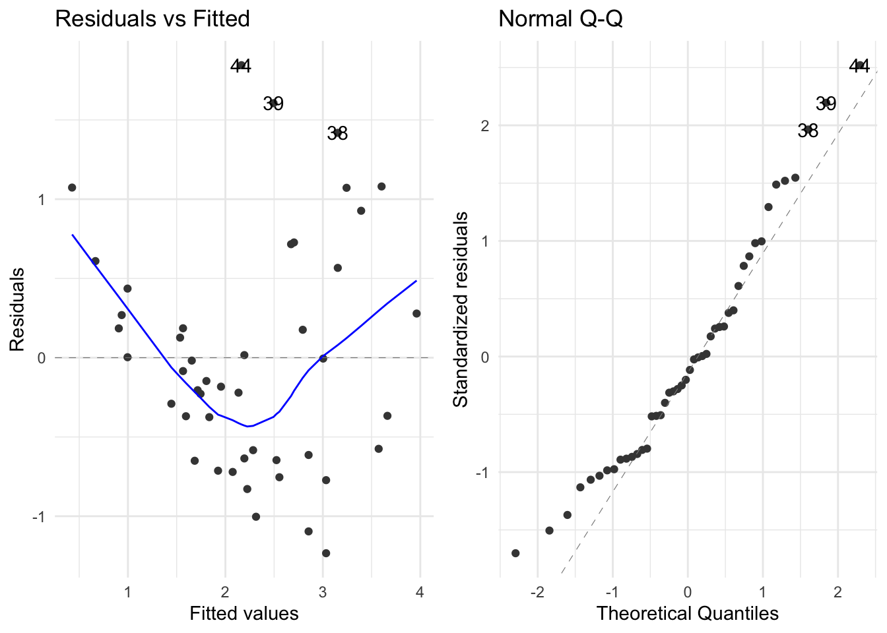
We would like to plot the residuals against the fitted values. For horses’ heart data, the residuals vs. fits plot (see Figure 5) does not show a random scatter of points about zero, but rather a clear trend of U-shaped curvature together with a pattern of increasing variability about the trend. This indicates that a shrinking transformation of the \(Y\) variable should be considered (as does the marginal distribution of \(Y\) – see the next section for details). This is not surprising given our initial examination showed that a curved fit was more appropriate, but in general systematic departures from a model fit are easier to see in a residual plot than in the original scatterplot of the data.
The normal quantile plot enables us to assess whether the residuals are normally distributed – there is some evidence of right skewness but not much so the normality assumption appears to be justified (a test for normality can always be carried out for confirmation).
The plot of residuals against the order of occurrence in the data set is used to judge whether the residuals are independent. In our case, the residual vs. observation order plot reveals no trend for the first 30 values but an increasing trend after that. An examination of the data set reveals that the last values in the data are also those with the largest extdia values which is where the maximum deviation from a straight line was already noted. Once again, an appropriate residual plot makes it easier to spot features of model fit (or lack of fit). Durbin-Watson (DW) test for the serial correlation in the residuals can be performed. The test statistic for the DW test is \[d = \frac{\sum _{i=2}^{n}\left(e_{i} -e_{i-1} \right)^{2} }{\sum _{t=1}^{n}e_{i} ^{2} } .\] If \(d\) is about 2, it suggests independence of the residuals. If residuals are positively correlated, then \(d\) will be close to zero. If \(d\) is large and close to 4, then negative correlation among the residuals is indicated. Critical values for the DW statistic are available in tables. The car package provides the \(p\)-value for the null hypothesis that there is no serial correlation in the residuals.
simplereg |>
residuals() |>
car::durbinWatsonTest()[1] 0.9482249The residuals vs. fits plot also helps to identify outliers – there appears to be at least one possible outlier with a residual greater than 1.5. If the residuals appear to be normally distributed, however, we can automate outlier detection by calculating the standardised residuals. Note that residuals are standardised by subtracting the mean (which is zero) and dividing by the standard deviation. For the \(i^{th}\) residual, the standard deviation (i.e. standard error) is given by
\[ s_{e_{i} } =s_{e} \sqrt{1-\left(\frac{1}{n} +\frac{(x_{i} -\bar{x})^2}{S_{xx} } \right)} \]
Any value with a standardised residual whose magnitude is greater than 2 is a potential outlier as we only expect this to happen about 5% of the time: i.e. two observations (39 and 44) gave rise to standardised residuals greater than 2. For a sample of size 46 we would expect (5% of 46 =) 2 or 3 values to give standardised residuals greater than 2, so this is not unexpected. However if the standardised residual of any point is extremely large, we should check the original data to decide whether an error has been made. Alternatively, we may decide that this point does not fit the given model and hence remove that point from the data. Statisticians are very loathe to throw data points away as even the unusual points may contain information about the model and why it does or does not fit well. For the present data set, the standardised residuals are not particularly large and within the expected 5% so that we would not remove them from the data set.
The residuals may be greatly influenced by outliers or unusual points because the slope estimate of the regression line is sensitive to these outliers. In order to overcome this difficulty, we may find the fitted values corresponding to each \(x\) value using all the data except for that data point. In other words, the data point \(\left(x_{i} ,y{}_{i} \right)\) can be omitted, and a line can be fitted. We then obtain the fitted value for the \(i^{ th}\) data point say \(\hat{y}_{i,-i}\) and the associated deleted residual (also known as studentised residual) \(e_{i,-i} =y_{i} -\hat{y}_{i,-i}\). We can explore the deleted residuals instead of the ordinary residuals. These deleted residuals are also externally studentised (a process similar to standardisation) so that the residual error estimate is done without the \(i^{th}\) data point (see Figure 6).
del.resid <- rstudent(simplereg)
qplot(seq_along(del.resid), del.resid) +
xlab("observation") +
ylab("studentised residual")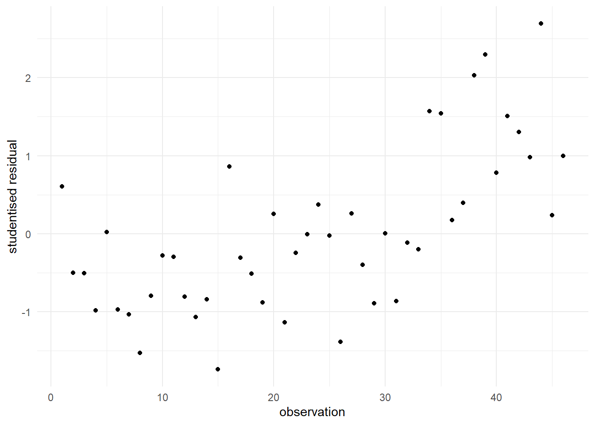
Some scenarios concerning residual plots are explained below:
(a) Transformations
In Figure 7, residuals are plotted against fitted values but show a funnel pattern instead of falling approximately in a horizontal band. Figure 7(a) indicates that a shrinking transformation of square root or logarithm may be appropriate; Figure 7(b) suggests a stretching transformation such as squaring the response variable.
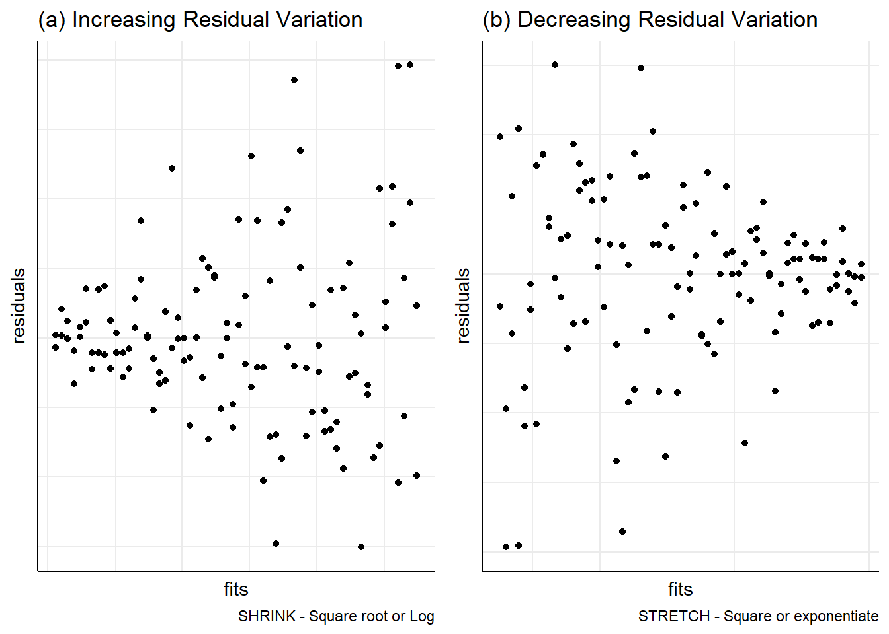
(b) Addition of other variables
Figure 8(a) residuals are plotted against fitted values. This plot suggests the addition of a quadratic, \(x_2\), term to the model. In Figure 8(b) the residuals are plotted against a potential explanatory variable, \(X_i\), which is not yet included in the model. This plot indicates a linear relationship between the residuals and \(X_i\) suggesting that \(X_i\) should be added to the linear model.
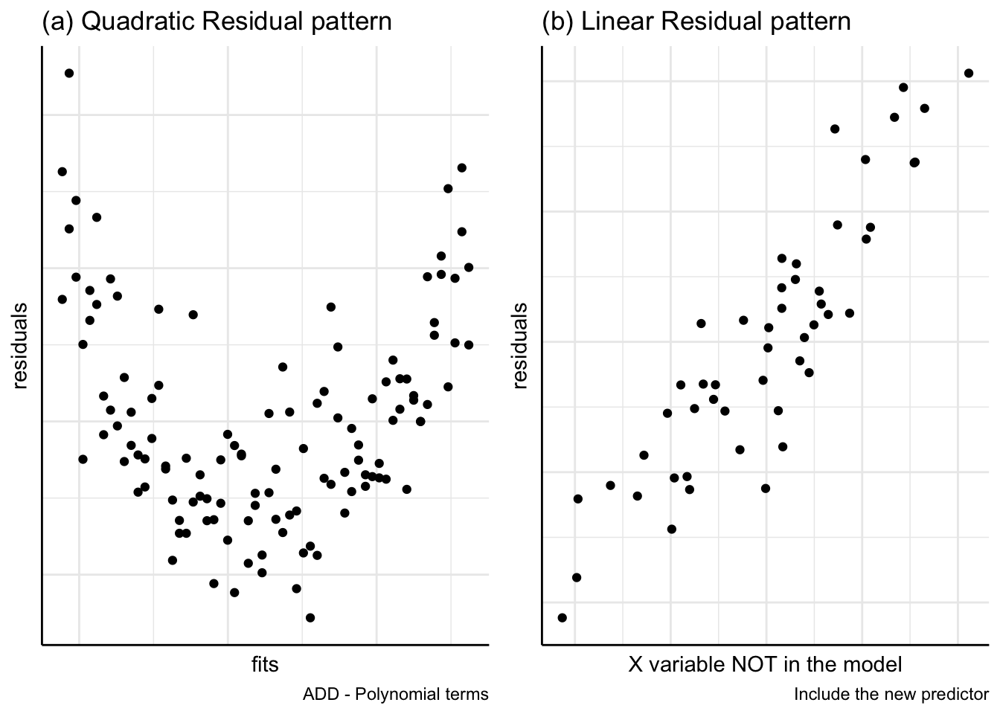
(c) Subgroups
Plots may show that a model seems to fit very well, as in Figure 9(a). But this is a spurious effect brought about by the presence of two or more subgroups in the data. Models fitted to each of the subgroups would not show up as being good fits to the data. In Figure 9(b), on the other hand, a poorly fitting model may be due to subgroups but if individual models were fitted, they would fit the data well.
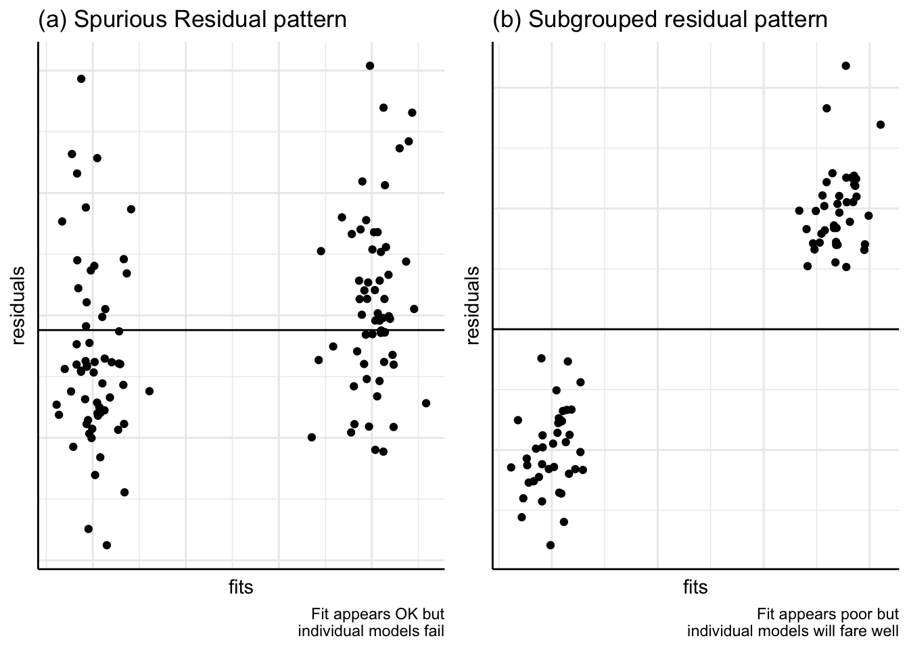
(d) Outliers
Plots of residuals against the fitted \(y\) values or the explanatory variables may indicate peculiar values. It may be that a few data points are very unusual; perhaps unusual conditions prevailed at those times when those data points were recorded; errors may have been made by those taking these measurements; errors may have occurred in coding or entering data into the computer (see Figure 10(a)).
In Figure 10(b), the outliers may indicate that the model does not fit very well at the larger observed values of \(y\).
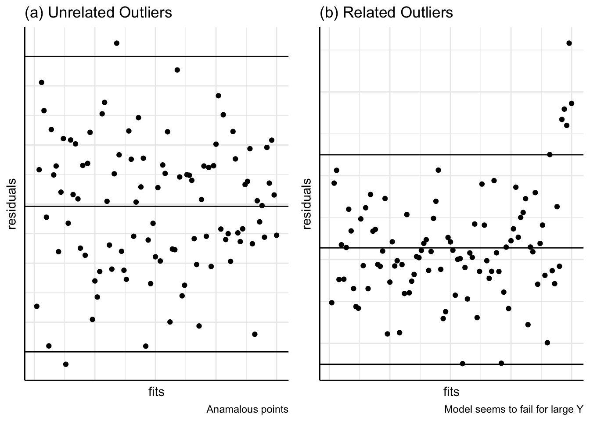
(e) Autocorrelation
Figure 11 shows patterns in plots of residuals against time. In (a), a positive residual tends to be followed by another positive residual. If the residuals are correlated with themselves ‘lagged’ by one time period, this correlation is called autocorrelation and the coefficient would be positive for (a). In (b), the autocorrelation would be negative; this could occur with the price of potatoes as a high price one year may encourage gardeners to plant even more the next year leading to a glut and low prices, followed by a hesitancy the next year leading to scarcity and higher prices, and so on.
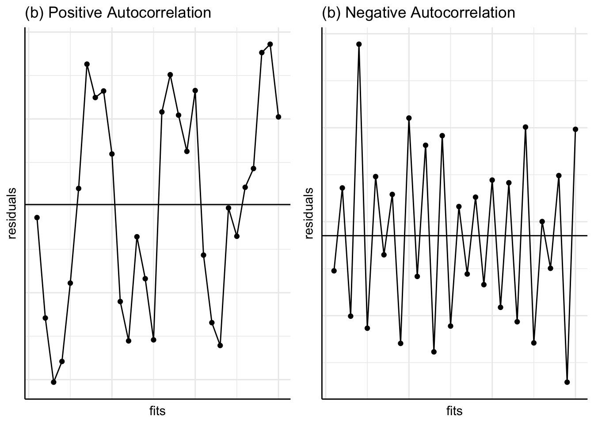
The above figures show the residuals on the \(y\)-axis. We may also plot the standardised residuals, deleted residuals etc. Some prefer to plot the square root of the absolute standardised residuals against the fitted values (instead of plotting ordinary residuals against the fitted values). This plot, known as the Scale-Location plot, helps us to judge whether the residual variation is constant, and also to identify the observations having large residuals (i.e. \(\sqrt{\left|{\text {standardised residual}}\right|} >\sqrt{2} =1.41\); see Figure 12.
full.model <- lm(WEIGHT~ ., data=horsehearts)
autoplot(full.model, which=3, ncol=1)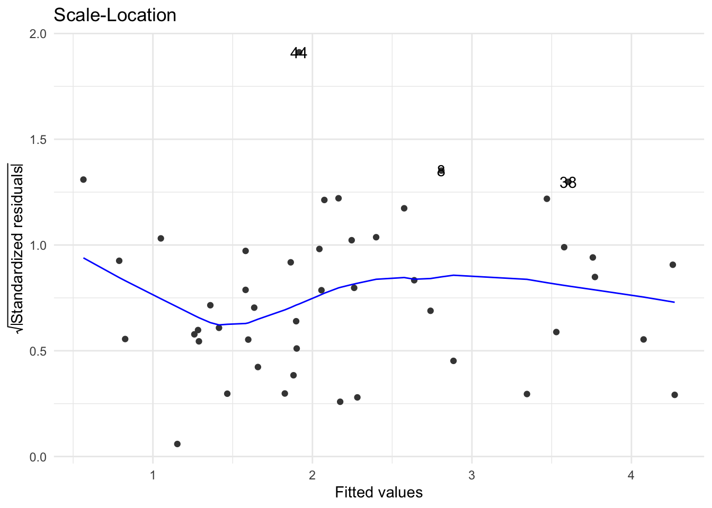
Depending on the R package used, a variety of plots for exploring the residuals can be obtained.
In summary, residuals give important information about the fit of a model and how it might be improved:
Large variability of residuals in relation to the total variability in \(Y\) indicates a feeble relationship between \(Y\) and \(X\). We can try transforming \(Y\) or adding other variables to the fitted model.
The residuals should fall in a horizontal band when plotted against the fit, that is, the variance of the residuals should be constant over different values of the fit. If not, try a transformation.
Normality of the residuals confirms that the normality assumption required for the \(t\) and \(F\) tests is satisfied. Otherwise a transformation of the response variable may be required.
Plotting the residuals against the order of the data allows us to check whether successive values are independent of one another, and hence may reveal further relationships in the data.
If the fitted simple regression is rather poor, what can be done?
(a) Use a different predictor variable
For this Chapter example, we could choose another one of the ultra-sound measurements to predict the weight of the horses heart.
(b) Transform the \(Y\) variable
We could choose a transformation which makes physical sense. For example, we could argue that the weight of the heart should be closely related to the volume of the heart and volume is related to the product of three lengths or any one length cubed. Rather than cubing the \(X\) variable we usually transform the response variable \(Y\). Alternatively we might choose a transformation based on statistical grounds. Our previous discussion suggests that a shrinking transformation should be used, so suppose we take the logarithm of \(Y\). The distribution of weights is compared before and after transformation in Figure 13.
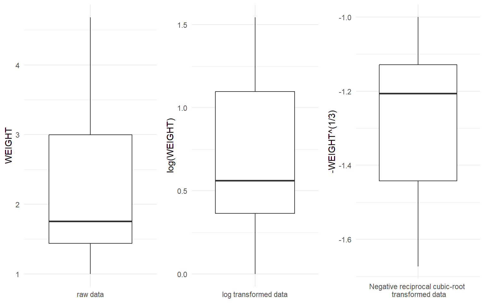
We can see the effect of logarithmic transformation from the boxplot in Figure 13. Clearly the distribution has become more symmetric. In order to make the distribution even more symmetric we might also try a power transformation as shown in Figure 13. Here we have applied the negative reciprocal cubic root transformation \(-\frac {1}{Y^{1/3}}\) which makes more physical sense. This yields a slightly symmetric distribution. A minimal summary output of the regression of \(WEIGHT^{1/3}\) on EXTDIA is shown in Table 4:
lm(WEIGHT^(1/3)~EXTDIA, data=horsehearts) |>
glance() |>
select(r.squared, sigma, statistic, p.value, AIC, BIC)|>
mutate_if(is.numeric, round,3) |>
t() |>
kable() |>
kable_classic(full_width = F) | r.squared | 0.616 |
| sigma | 0.128 |
| statistic | 70.498 |
| p.value | 0.000 |
| AIC | -54.588 |
| BIC | -49.102 |
This output shows an improvement in the \(R^{2}\) value. However, for technical reasons one cannot meaningfully compare \(R^{2}\) values for the raw and transformed data. The estimated standard deviation of the residuals is also meaningless when comparing raw and transformed data (recall that this quantity is the square root of the residual MeanSq). There is really only one way to confirm whether a transformed model is better than the original model and that is by analysing the residuals. Only if the residuals are better behaved, in that they comply more closely with the regression assumptions, can one claim that the transformed model is preferable. This is a very important point.
In the next Chapter, we will cover more on AIC and BIC values shown in@tbl-transweightreg but the simple thumb rule is to opt a model with the smallest AIC or BIC while we go for a model with the largest log-likelihood.
These values also support the model based on the negative reciprocal cubic root transformed data.
(c) Add other explanatory variables to the model
This will cause the \(R^{2}\) to increase (although we may decide that the increase is not worth the effect of making the model more complicated). We will study multiple regression models having two or more predictors in the next chapter.
The regression fit by the least squares method can be affected by outliers. If data are explored using scatterplots, then we often obtain which of the observations are suspicious or appear to be rogue.
The residual standard error at a given \(x\) value is given by \[s_{e_{i} } =s_{e} \sqrt{1-\left(\frac{1}{n} +\frac{x_{i} -\bar{x}}{S_{xx} } \right)}.\] From the above expression, we see that if an \(x\) value is further away from the mean \(\bar{x}\), then the residual variance will be small. If an \(x\) value is closer to the mean \(\bar{x}\), then the residual variance will be greater. This means that \(x\)-values far from \(\bar{x}\) pull the regression line closer to the corresponding \(y\)-values or alternatively such a distant \(x\) value has a higher leverage. This leverage is often measured by the hi values namely \[h_{ii} =\frac{1}{n} +\frac{\left(x_{i} -\bar{x}\right)^{2} }{S_{xx} }.\] The above leverage measure \(h_{ii}\) always lies between zero and one, and does not depend on the actual \(y\) values. The higher the leverage of an \(x\)-value, the greater its potential influence on the regression coefficients. If a \(h_{ii}\) value is greater than \(\frac{3p}{n}\) (where \(p\) is the number of model terms (including the constant) and \(n\) is the number of observations), then the associated data point is generally regarded as having high leverage. When the number of predictors is small, say 1 to 4, some use a conservative cut-off value \(\frac{4}{n}\) instead of \(\frac{3p}{n}\).
One of the measures of influence on the regression results is known as the Cook’s distance which is related to difference between the regression coefficients with and without the \(i^{th}\) data point. The formula for the Cook’s distance for the \(i^{th}\) data point is given by
\[D_{i} =\left(\frac{h_{ii} }{1-h_{ii} } \right)\left(\frac{r_{i}^{2} }{p} \right).\] where \(r_{i}\) is the standardised residual given by \[r_{i} =\frac{e_{i} }{s_{e} \sqrt{1-\left(\frac{1}{n} +\frac{x_{i} -\bar{x}}{S_{xx} } \right)} }.\]
As a rule of thumb, points with \(D_{i} >0.7\) can be deemed as being influential (for \(n>15\)). If \(D_{i} >1\), then the influence of this point is far greater and must be investigated further.
We prefer to examine plots of \(D_{i}\) (and \(h_{ii}\)) against the residuals, standardised residuals, explanatory variables, fitted values or time order etc for a visual identification of any observation with markedly higher influence than the other observations in the data. As an example, consider the data set Rangitikei. Figure 14 shows that the 26th observation is clearly anomalous.
download.file(
url = "http://www.massey.ac.nz/~anhsmith/data/rangitikei.RData",
destfile = "rangitikei.RData")
load("rangitikei.RData")ggplot(rangitikei, aes(x=vehicle, y=people)) +
geom_point() +
geom_smooth(method="lm") +
ggtitle("Rangitikei Data") +
annotate("text", label = "# 26", x = 115, y = 475, size = 4, colour = "red")`geom_smooth()` using formula = 'y ~ x'
Figure 15 shows the standardised residuals vs. leverage plot of the linear regression of people (\(Y\)) on vehicles (\(X\)). This plot also shows the Cook’s distance and warning limits at 0.5 and 1. Clearly the observation #26 is a point of high leverage (\(h_{ii}\) being 0.63) as well as influential (\(D_{i}\) being 4.97).
autoplot(lm(people~vehicle, data=rangitikei), which=6, ncol=1)
The formulae for \(h_{ii}\) and \(D_{i}\) presented in this section are valid for simple regression only. It is general practice to examine the four plots (which are placed in a single layout) shown in Figure 16) for residual analysis of a regression fit.
ggplot2::autoplot(lm(people~vehicle, data=rangitikei))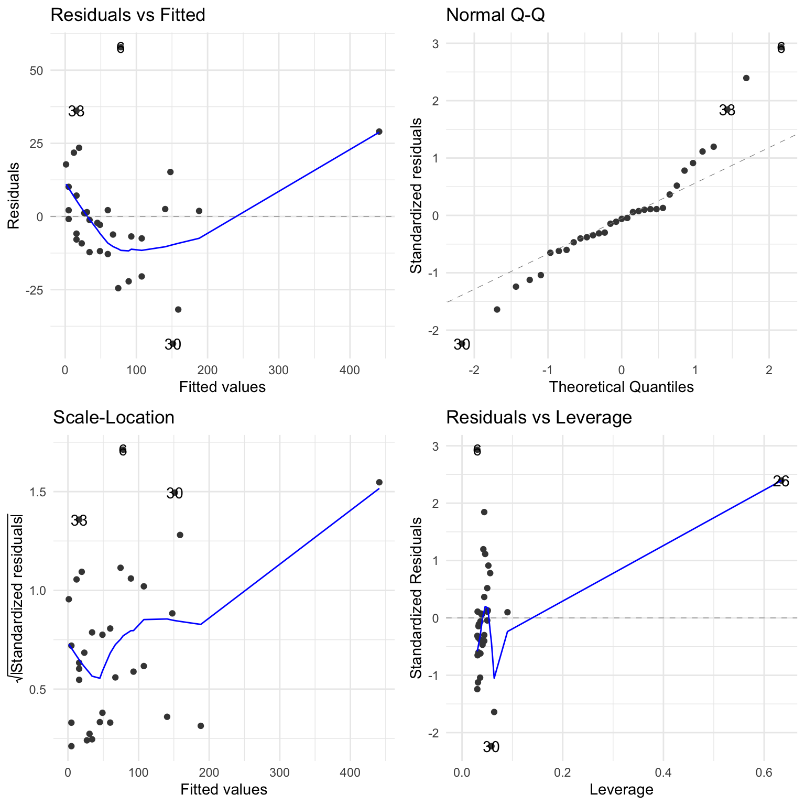
The fourth plot will show the Cook’s distance contours when the base plot() function is used instead of autoplot() function.
The weighted least squares regression approach places differing weights for each pair of points and minimises the sum of weighted squared residuals. The R function lm() allows for this. A popular approach is to employ the reciprocal of error variance of the response \(Y_i\) at a given \(X_i\). An example of weighted least squares line is shown in Figure 17.
ols <- lm(people~vehicle, data=rangitikei)
wts <- 1 / lm(abs(ols$residuals) ~ ols$fitted.values)$fitted.values^2
ggplot(rangitikei) +
aes(x=vehicle, y=people) +
geom_point() +
geom_smooth(method="lm", mapping = aes(weight = wts)) +
ggtitle("Weighted regression") +
annotate("text", label = "# 26", x = 115, y = 475, size = 4, colour = "blue")`geom_smooth()` using formula = 'y ~ x'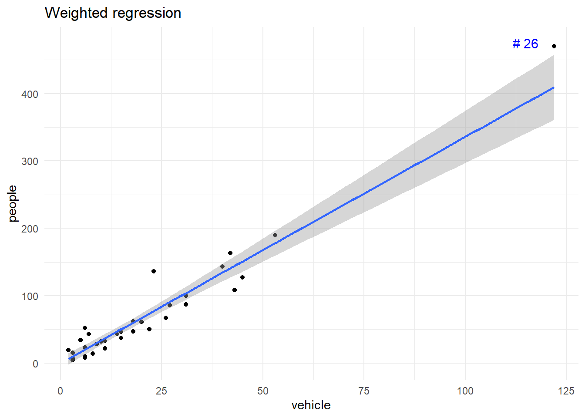
median-median or resistant line
The median–median line is an alternative to the least squares regression and is resistant or robust to outliers. To obtain this line, we divide the data into three equal size groups after sorting the \(X\) variable data. If equal division cannot be done, the middle group can be larger than the low and high groups. For the low and high groups, obtain the medians of the \(X\) and \(Y\) values separately. The median–median line (also called Rline) is the line joining these two sets of median points. A more sophisticated version of fitting a resistant line is available in statistical software programs including R, which mainly implement the procedure suggested by Hoaglin, Mosteller, and Tukey (1983). Such approaches place additional restrictions on the residuals of the fitted resistant line or shift the original line one-third of the way from its original position toward the median-median point of the middle group.
The R function line() will fit a resistant line using a method proposed by Tukey, and hence this fit is called Tukey Line.
download.file(
url = "http://www.massey.ac.nz/~anhsmith/data/testmarks.RData",
destfile = "testmarks.RData")
load("testmarks.RData")line(x= testmarks$Maths, y=testmarks$English)The fitted Tukey line is shown in Figure 18:
Tukeyline <- line(x = testmarks$Maths, y = testmarks$English)
testmarks |>
mutate(fits=fitted(Tukeyline)) |>
ggplot() +
aes(x = Maths, y = English) +
geom_point() +
geom_line(aes(x=Maths, y=fits))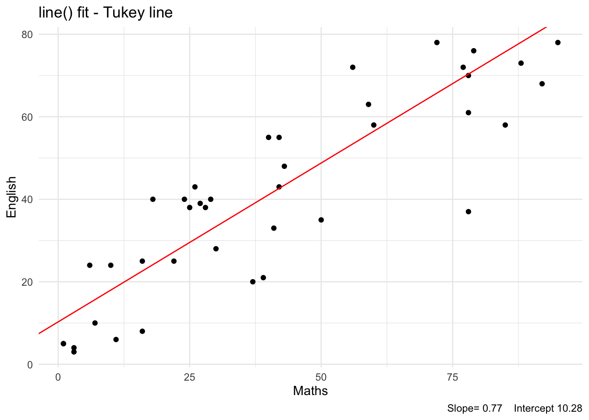
There are variations to robust modelling. We may use the means rather than medians in each group after dividing the data into three parts. Generally speaking, if the data set is large or the residuals distributed nearly normally then the means of the lower and upper groups are more appropriate than the medians. The other approaches include (i) minimising the sum of absolute residuals (ii) least median of squares (LMS) etc.
For best fitting procedures, we minimise the residuals in some way - for example, by minimising \(\Sigma e_{i}^{p}\) for some value of p. For fitting regression lines, we use the method of least squares where p = 2, i.e. the fitted line is such that the sum of squares of the residuals is as small as possible. However this procedure of minimising sums of squares is unduly affected by large residuals and so the regression line is pulled towards points which would give large residuals.
Unusual observations of \(Y\) tend to have more influence on the line than we would like. Some authors suggest that a better value for p would be 1.5. Another approach is to use p = 2 if the residuals are of moderate size but to reduce the value of p if the residual is large. Alternatively, if the residual is larger in absolute value than some high but realistic value then the residual is replaced by this value with the appropriate sign. Other procedures have also been devised which limit the influence on the regression line of unusually large or small values of \(Y\).
The advantage of robust estimation is that a few peculiar values of data do not have a large influence on the estimates. However the theory behind the statistical tests done on the estimated coefficients is more complicated when compared to the traditional methods. Two further R based robust methods of fitting lines are discussed below.
The R package function rlm() fits a robust linear model using an iterative procedure method, and we will not cover the theory behind this method in this course.
ggplot(testmarks) +
aes(x = Maths, y = English) +
geom_point() +
geom_smooth(method="rlm")`geom_smooth()` using formula = 'y ~ x'
Attaching package: 'MASS'The following object is masked from 'package:patchwork':
area
The R package robustbase function lmrob() is another option; see Figure 19.
ggplot(testmarks) +
aes(x = Maths, y = English) +
geom_point() +
geom_smooth(method="lmrob")`geom_smooth()` using formula = 'y ~ x'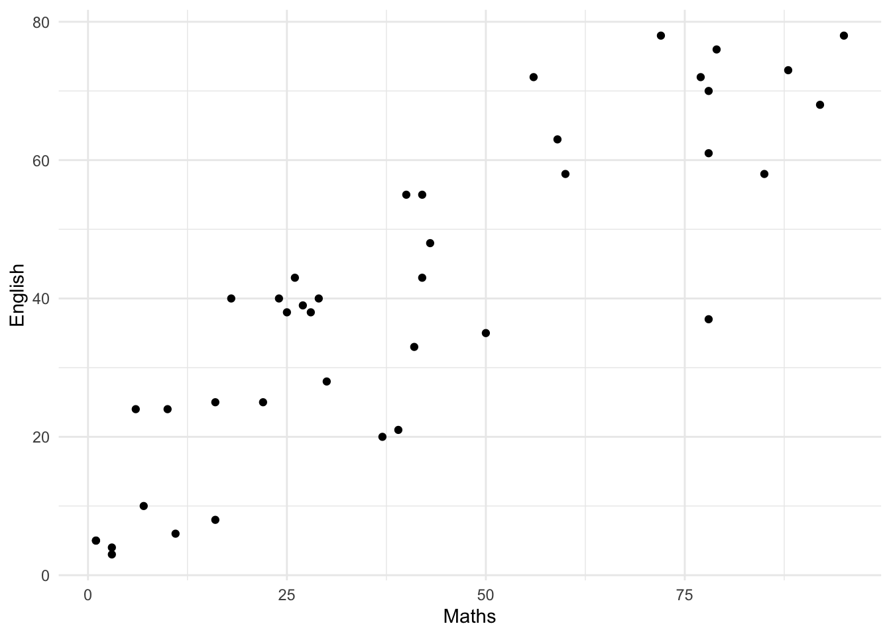
library(robustbase)
lmrob(English ~ Maths, data = testmarks) |> summary()
Call:
lmrob(formula = English ~ Maths, data = testmarks)
\--> method = "MM"
Residuals:
Min 1Q Median 3Q Max
-30.571 -8.295 1.757 8.234 20.291
Coefficients:
Estimate Std. Error t value Pr(>|t|)
(Intercept) 11.33456 2.83623 3.996 0.000285 ***
Maths 0.72098 0.05813 12.402 0.00000000000000625 ***
---
Signif. codes: 0 '***' 0.001 '**' 0.01 '*' 0.05 '.' 0.1 ' ' 1
Robust residual standard error: 13.17
Multiple R-squared: 0.7558, Adjusted R-squared: 0.7494
Convergence in 8 IRWLS iterations
Robustness weights:
Min. 1st Qu. Median Mean 3rd Qu. Max.
0.5692 0.9093 0.9644 0.9363 0.9835 0.9990
Algorithmic parameters:
tuning.chi bb tuning.psi refine.tol
1.5476400000000 0.5000000000000 4.6850610000000 0.0000001000000
rel.tol scale.tol solve.tol zero.tol
0.0000001000000 0.0000000001000 0.0000001000000 0.0000000001000
eps.outlier eps.x warn.limit.reject warn.limit.meanrw
0.0025000000000 0.0000000001728 0.5000000000000 0.5000000000000
nResample max.it best.r.s k.fast.s k.max
500 50 2 1 200
maxit.scale trace.lev mts compute.rd fast.s.large.n
200 0 1000 0 2000
psi subsampling cov
"bisquare" "nonsingular" ".vcov.avar1"
compute.outlier.stats
"SM"
seed : int(0) The slope estimates are similar for the above robust fits. The standard error of the estimated y-intercept is usually large. The slope of the line being the important parameter, we may conclude that the fitted slope of 0.72 is the robust value.
This technique is commonly employed for validating models for prediction purposes. The available data is split randomly into \(k\) (equal) folds (parts), often by resampling. A model is fitted for the \((k-1)\) folds of the data, and then the prediction errors are calculated for the fold that was omitted for modelling. This process can be repeated omitting one subset (out of the \(k\) subsets) so that all the \(k\) subsets contribute to the estimation of prediction accuracy. This exercise is computationally intensive, and hence we will leave it to the software package such as caret, rsample or modelr to perform the cross validation. Consider the simple regression of WEIGHT on EXTDIA done with the horsesheart data. The following R code perform the 5-fold cross validation of the model for prediction purposes and compare the root mean square errors for both the regression and robust regression models.
library(caret)
library(MASS, exclude = "select")
set.seed(123)
# Set up cross validation
fitControl <- trainControl(method = "repeatedcv",
number = 5,
repeats = 100)
# lmfit
lmfit <- train(WEIGHT ~ EXTDIA,
data = horsehearts,
trControl = fitControl,
method = "lm")
# rlmfit
rlmfit <- train(WEIGHT ~ EXTDIA,
data = horsehearts,
trControl = fitControl,
method = "rlm")
# Extract the RMSE scores
dfm <- tibble(
lm = lmfit |> pluck("resample") |> pull(RMSE),
rlm = rlmfit |> pluck("resample") |> pull(RMSE)
) |>
pivot_longer(cols=everything(),
names_to = "Method",
values_to = "RMSE")
# Make plot of RMSE
ggplot(dfm) +
aes(x=Method, y=RMSE, col = Method) +
geom_boxplot() +
coord_flip() +
theme(legend.position = "none")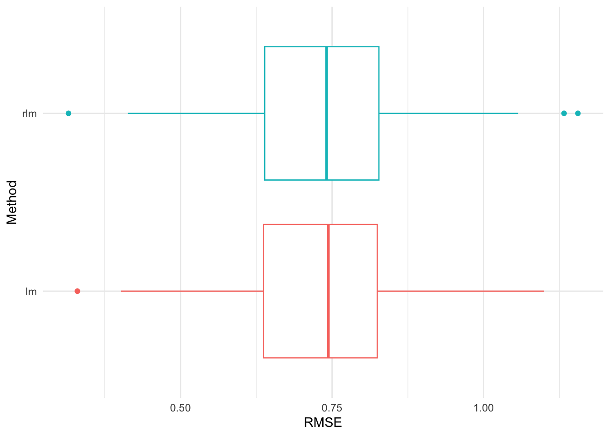
Figure 20 shows that the robust rlm() fit slightly outperforms the simple regression fit in terms of RMSE. The number of folds fixed can affect the comparison. The choice of k=5 or 10 is usually recommended.
Figure 21 shows the cross validation RMSEs for the lm() and rlm() fits for the Rangitikei dataset based on modelr package codes. The robust model again perform slightly better but this does not mean the fitted model is the best one for prediction.
library(purrr)
library(modelr)
set.seed(123)
# Set up cross validation
cv2 <- crossv_mc(rangitikei, 500)
# Fit the models
lm_models <- map(cv2$train, ~ lm(people ~ vehicle, data = .))
rlm_models <- map(cv2$train, ~ rlm(people ~ vehicle, data = .))
# Extract the RMSE scores
dfm <- tibble(
lm = map2_dbl(lm_models, cv2$test, rmse),
rlm = map2_dbl(rlm_models, cv2$test, rmse)
) |>
pivot_longer(cols=everything(),
names_to = "Method",
values_to = "RMSE")
# Make a plot
ggplot(dfm) +
aes(x=Method, y=RMSE, col = Method) +
geom_boxplot() +
coord_flip() +
theme(legend.position = "none")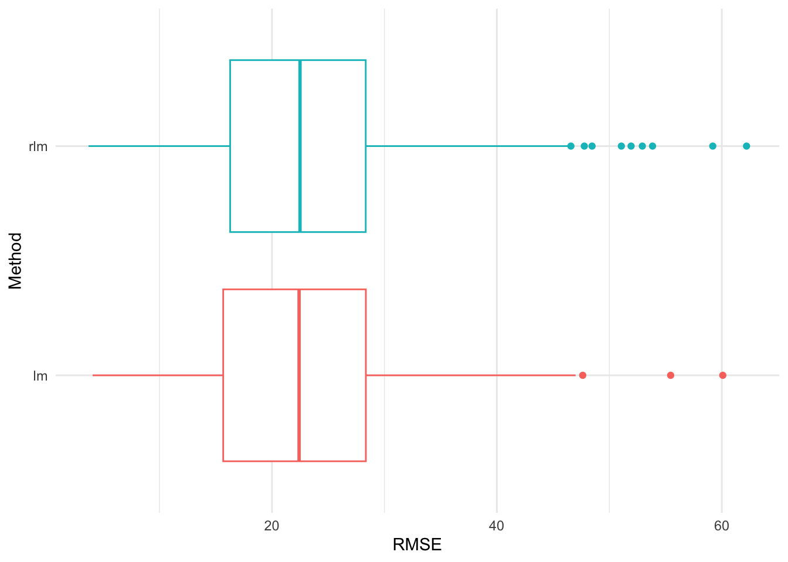
Once a model is fitted to data, the question must be asked as to whether the fit is a good one. Perhaps it would be more in keeping with the spirit of statistical tests to ask if the fit is bad. The fitted model is of the general form
\[ \text{observation = fit+ residual}\]
Model improvement will take place to capture all the systematic variation in the data. This chapter considered only straight line models with a single predictor variable. If the fit is poor, a transformation could be tried by stretching or shrinking \(Y\) by a power transformation.
Scatterplots and correlation coefficients provide important clues to the inter-relationships between the variables and hence form the first step in building a regression model. The simple regression model is one of the most commonly used tools. Here the main aim is to fit a model (slope and \(y\)-intercept) by the least squares method to explain the variation in \(Y\), the response variable, by fitting the explanatory (\(X\)) variable. Regression models are often improved in several ways after residual analysis.
What is THE best model for this data? If there is an answer to this question, it should not be determined solely on statistical grounds. Statistics as a tool (often a very powerful tool) can only suggest the best model given that a number of assumptions have been agreed on. Ideally, one would not have to make a decision on the basis of a single sample as we have here. We should examine the literature to discover similar examples and see how they were tackled or, even better, one could discuss the matter with a researcher who has worked on similar data sets. If the aim is to estimate the coefficients or to predict the weight of the heart of another living horse from ultrasound measurements, we tend to select the simplest, feasible model. In this case, we could choose a model with ONE predictor variable (say innerdia). And a cube root or logarithm transformation might be applied. With more than one explanatory variable, the number of possibilities increases for relationships between these variables and between the response variable \(Y\). These possibilities will be discussed further in the next chapter.
Concepts and practical skills you should have at the end of this chapter: